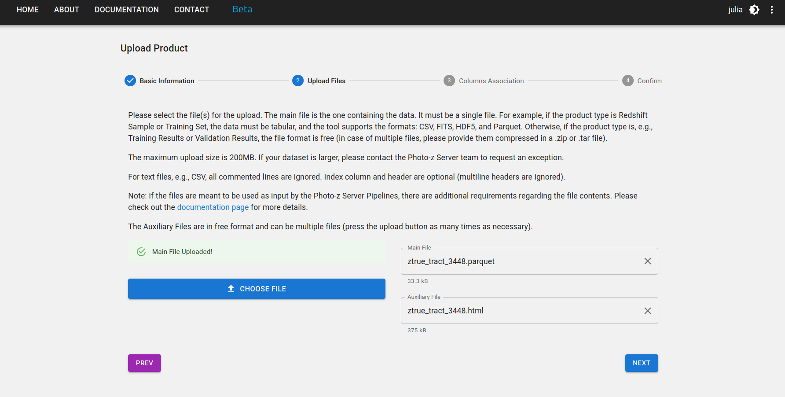

LSST Photo-z Server
Introduction¶
Inspired by the DES Science Portal (Gschwend et al., 2018; Fausti Neto et al., 2018), the Photo-z Server is an online service complementary to the Rubin Science Platform (RSP) to host and produce photo-z-related lightweight data products and to offer data management tools that allow sharing data products among RSP users, attach and share relevant metadata, and assist in provenance tracking.
The service is hosted at the Brazilian Independent Data Access Center (IDAC) and is open to the whole LSST Community without geographic constraints. It is designed to be as broad and generic as possible to be helpful for all LSST Science Collaborations working with photo-z data products. As required by the LSST in-kind program, the source code will be publicly available on GitHub.
The Photo-z Server was conceived to support RSP users participating in the Photo-z (PZ) Validation Cooperative, an initiative led by the Data Management (DM) team during the LSST commissioning phase (see technical note DMTN-049 for details). Members of the PZ Coordination Group will be granted administrative credentials with special permissions to upload data products marked as official data products. These will include standardized training and validation sets used for algorithm performance comparisons, as well as a means to collect results from multiple users.
Beyond the PZ Validation Cooperative, the Photo-z Server will remain a resource for the LSST Community in the years to follow. RSP users can continue using it to organize, track, and share lightweight files containing diverse test results.
Datasets
The Photo-z Server administrators maintain and periodically update a curated list of data resources to support the LSST Community with photo-z-related data products. Detailed descriptions and links to each data product are available on a separate page.
Photo-z Server website¶
The main user interface of the Photo-z Server website is its website at pzserver.linea.org.br.

The three cards on the landing page lead to the list of data products (left and center) or to the Photo-z Server pipelines (right).
On the data products list page, users can browse, search and filter the products uploaded by users or created with a Photo-z Server pipeline. The data products uploaded on the Photo-z Server become automatically visible, downloadable and shareable to all registered users.

Upload a new data product¶
To upload a new data product, click the NEW PRODUCT button at the top right of the User-generated Data Products page and fill in the upload form with relevant metadata in four steps:
Step 1: Inform a short and mnemonic name for your new data product. Select the type of data product you are uploading (e.g., Reference Redshift Catalog, Training Set, etc.) and the data release to which it belongs (if applicable).

Step 2: Select your main file and as many auxiliary files as you want to upload. The main file is the one containing the data product itself, while auxiliary files can include documentation, description, or any other relevant information about the data product.
If the data product is tabular, the upload tool might require specific file formats depending on its type. The formats currently supported are: CSV, FITS, HDF5, and Parquet. Get in touch with the development team if your science case requires a different file format or if your file is larger than the limit of 200MB.

Step 3: If the data product is a Reference Redshift Catalog or Training Set, some columns are mandatory. The columns names are free, but you must provide the association with their meaning and UCDs in the IVOA standard as in the figure below.

Step 4: Revise your information and go back to the previous steps if necessary. Don't forget to press the FINISH button at the bottom of the page to submit your data product.

Download a data product¶
To download a data product, click on the  icon on the product's row in the User-generated Data Products page. The click will trigger the preparation of a compressed .zip file with all the contents of the data product, including auxiliary description files.
icon on the product's row in the User-generated Data Products page. The click will trigger the preparation of a compressed .zip file with all the contents of the data product, including auxiliary description files.
There is also a button on the product's details page, which can be accessed by clicking on the product's name on the list.

Share data products¶
To share a data product, click on the icon on the product's row in the User-generated Data Products page or on the product's details page. The click will open a pop-up window with the product's internal_name and URL address. You can copy the information to share it with other users.
internal_name
Each data product has a unique name ("internal_name") automatically composed by the system as a unique id number followed by the name chosen by the user with spaces replaced by underlines. This name is the URL address of the data product's details page on the Photo-z Server website:
https://pzserver.linea.org.br/product/internal_name
and is the key to access the data using the Photo-z Server Python API (see details below). The easiest way to share a data product is by providing the product's internal_name or URL, which leads to the product's download page.
Product types¶
Reference Redshift Catalog¶
In the context of the Photo-z Server, Reference Redshift Catalogs are defined as any catalog containing spherical equatorial coordinates and redshift measurements (usually spectroscopic or true redshifts for simulations).
Mandatory columns:
- Right ascension [degrees] -
float - Declination [degrees] -
float - Redshift -
float
Recommended column:
- Redshift error -
float
A Reference Redshift Catalog can include data from a single spectroscopic survey or a combination of data from several sources.
Pipeline requirements
If a Reference Redshift Catalog is intended to be used as input data for the Combine Redshift Catalogs, applying the duplicates resolution feature (see pipeline details here), it is recommended to include the following columns:
- Quality flag (associate with z_flag in upload step 3) -
integer,float, orstring(the original quality flag from the source catalog, when available) - Measurement type -
string(e.g., "s" for "spectroscopic", "g" for "grism/prism", "p" for "photometric", as adopted in SITCOMTN-154) - Survey name (associate with survey in upload step 3) -
string(e.g., "DESI", "COSMOS2025", "JADES", etc.) - Other columns with additional information you want to use for duplicates resolution (e.g., instrument resolution).
Training Set¶
In the context of the Photo-z Server, Training Sets are defined as the product of the spatial cross-matching between a given Reference Redshift Catalog (single survey or compilation) and the photometric data, in this case, the LSST Object Catalog. The Photo-z Server's Training Set Maker pipeline allows users to build customized Training Sets based on the available Reference Redshift Catalogs (see pipeline details here).
train/test subsets
Training sets are commonly split into two or more subsets for photo-z validation purposes. If the Training Set owner has previously defined which objects should belong to each subset (training and validation/test sets), this information must be available as an extra column in the table or as clear instructions for reproducing the subset separation in the data product description. For two separate files each one must be uploaded separately and will become an independent data product, both with product type set as "Training Set", and their destination can be explicitly informed in the product name and/or description.
image-based training sets
The product type Training Set only supports catalog-level training sets. Image-based training sets commonly used by deep-learning algorithms are not supported. For this case, use the product type "Other" and provide a clear description of the data format in the product description.
To ensure flexibility in the observables, the only mandatory column is the redshift (float). Other expected columns are:
objectIdfrom LSST Objects Catalog -integer- Observables (e.g., magnitudes and/or colors, or fluxes) from the LSST Object Catalog -
float - Observable errors -
float - Right ascension [degrees] -
float - Declination [degrees] -
float - Quality Flag -
integer,float, orstring - Subset Flag -
integer,float, orstring
Training Results¶
The training results of machine learning-based algorithms can also be hosted in the Photo-z Server to be shared and reused. This product type allows files in free format. When the training results are generated with RAIL's inform method, they are stored as pickle files.
Validation Results¶
The product type Validation Results is intended to identify the results of any photo-z validation procedure. It can be used to store the results of the PZ Validation Cooperative or any other validation tasks.
This type of product is quite generic. It might contain photo-z estimates (single estimates and/or PDF) of a test set, photo-z validation metrics, QQ-PIT plots, etc. Users can upload one main file and a list of auxiliary files in any format.
Photo-z Estimates¶
Photo-z Estimates are the results of any photo-z estimation procedure, usually the output of RAIL's estimate method. If the data is larger than the file upload limit (200MB), the product entry stores only the metadata and instructions on accessing the data should be provided in the description field.
Other¶
Any other data product that does not fit in the previous categories can be uploaded as a product of type Other. This is a generic product type that allows users to upload any file format and provide a description of the data product in the description field.
API & Python library¶
The Photo-z Server also offers an API and a Python library to facilitate the command-line access of data and metadata. The API contains functions to explore the data products available, retrieve the contents of a given data product to work on memory or download the files of interest.
The Python package pzserver is open source available on GitHub and is installable via pip with:
pip install pzserver
Tutorial notebook¶
A tutorial notebook with examples for all pzserver methods is available on the pzserver library's repository on GitHub. There is also the API documentation page with further details targeted for developers.
Access token¶
Once installed and imported in a Python environment, the PzServer class opens the remote connection to the Photo-z Server database.
from pzserver import PzServer
pz_server = PzServer(token="<paste your access token here>")
An access token is required for authentication. Users can generate the token on the Photo-z Server website (top right corner menu on the home page).


Basic commands¶
Basic commands to display data and metadata in a Jupyter notebook cell (if not in a Jupyter notebook, replace display for get to return the results as Python dictionaries):
pz_server.display_product_types()
pz_server.display_releases()
pz_server.display_products_list()
pz_server.display_products_list(filters={"release": "DP1",
"product_type": "Training Set"})
search_results = pz_server.get_products_list(filters={"product_type": "results"})
pz_server.display_product_metadata(id or "internal_name")
Basic commands to download or retrieve data to memory:
pz_server.download_product(id or "internal_name", save_in=".")
data = pz_server.get_product(id or "internal_name")
See the tutorial notebook for the complete list of examples, including instructions to upload and modify data products via the pzserver library.
Photo-z Server pipelines¶
The Photo-z Server pipelines are a set of tools to help users create and manage data products. The pipelines available now are (click on the links for more details):
Combine Redshift Catalogs¶
Training Set Maker¶
Open Source Code¶
The Photo-z Server is an open-source project. Its source code is available in the following GitHub repositories:
- pzserver_app: the main application code, including the web interface and API.
- pzserver: the Python library used to access the Photo-z Server API.
- pzserver_pipelines: the pipeline code available on the Photo-z Server.
- orchestration: the application responsible for submitting pipelines to the IDAC HPC cluster and managing their execution.
- pz-lsst-inkind: code for data management tasks in the Photo-z Server's in-kind program, including data preparation, quality assurance, and pipeline validation notebooks.
- pz-lsst-inkind-doc: high-level documentation for the Photo-z Server in-kind program, published via GitHub Pages.
The code is licensed under the MIT License. Contributions are welcome!
Acknowledgement¶
The Photo-z Server uses computational resources of IDAC-Brazil at the Laboratório Interinstitucional de e-Astronomia (LIneA) with financial support from INCT do e-Universo (Process no. 465376/2014-2) and FINEP project: LIneA: e-Science Center for exploring the mysteries of the Universe and support Big Data projects (ref no. 0883/24).